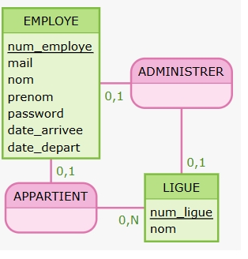

Gestion du Personnel M2L
Application Java de gestion des employés et ligues sportives
Contexte du projet
Ce projet a été réalisé dans le cadre de ma formation BTS SIO option SLAM. L'objectif était de développer une application de gestion du personnel pour la Maison des Ligues de Lorraine (M2L), permettant de gérer les ligues sportives et leurs employés avec une base de données MySQL.
Ressources fournies
- Structure de base du projet Java
- Interface en ligne de commande fonctionnelle
- Système de sérialisation pour la persistance
- Classes métier (Ligue, Employe, GestionPersonnel)
- Pattern DAO préconfiguré
Travail réalisé
- ✅ Conception et implémentation base de données MySQL
- ✅ Création du MCD/MLD selon les règles Merise
- ✅ Migration de la sérialisation vers JDBC
- ✅ Développement des DAO (Data Access Objects)
- ✅ Gestion des relations ligues/employés
Modèle Conceptuel de Données (MCD)
Schéma MCD

Script SQL
CREATE TABLE LIGUE (
num_ligue INT AUTO_INCREMENT PRIMARY KEY,
nom VARCHAR(100) NOT NULL
);
CREATE TABLE EMPLOYE (
num_employe INT AUTO_INCREMENT PRIMARY KEY,
nom VARCHAR(100) NOT NULL,
prenom VARCHAR(100) NOT NULL,
mail VARCHAR(255) NOT NULL UNIQUE,
password VARCHAR(255) NOT NULL,
date_arrivee DATE NOT NULL,
date_depart DATE,
num_ligue INT,
FOREIGN KEY (num_ligue) REFERENCES LIGUE(num_ligue)
);
CREATE TABLE ADMINISTRER (
num_ligue INT UNIQUE NOT NULL,
num_employe INT UNIQUE NOT NULL,
PRIMARY KEY (num_ligue, num_employe),
FOREIGN KEY (num_ligue) REFERENCES LIGUE(num_ligue),
FOREIGN KEY (num_employe) REFERENCES EMPLOYE(num_employe)
);
Technologies utilisées
Java
Programmation orientée objet, Pattern DAO, Gestion des exceptions
MySQL
Base de données relationnelle, Contraintes référentielles, Transactions
JDBC
Connexion Java-MySQL, PreparedStatement, Gestion des transactions
Merise
Modélisation MCD/MLD, Conception de bases de données
Fonctionnalités développées
Gestion des ligues
- Affichage de toutes les ligues
- Ajout d'une nouvelle ligue
- Modification d'une ligue existante
- Suppression d'une ligue
- Affectation d'un administrateur
Gestion des employés
- Liste des employés par ligue
- Ajout d'un nouvel employé
- Modification des informations
- Suppression d'un employé
- Affectation à une ligue
Sécurité & Persistance
- Connexion MySQL sécurisée
- Identifiants protégés (.gitignore)
- Transactions ACID
- Gestion des erreurs SQL
- Validation des données
Interface graphique (Java Swing)
Développement UI
Une interface graphique a été développée en Java Swing afin de remplacer l'interface en ligne de commande initiale. L'objectif était de proposer une application plus intuitive et accessible aux utilisateurs.
- Création de fenêtres avec JFrame
- Utilisation de composants Swing (JButton, JTable, JTextField)
- Gestion des événements (ActionListener)
- Navigation entre les écrans
- Affichage dynamique des données
Apports du projet
Le développement de cette interface m'a permis de mieux comprendre la conception d'applications desktop ainsi que l'interaction entre l'utilisateur et le système.
- Amélioration de l'expérience utilisateur (UX)
- Structuration d'une interface graphique
- Gestion des interactions utilisateur
- Connexion avec la base de données via JDBC
- Architecture plus professionnelle

Compétences développées
Conception
Modélisation de bases de données avec Merise, création de MCD/MLD, normalisation, gestion des cardinalités et contraintes référentielles.
Développement
Programmation Java orientée objet, pattern DAO, JDBC, gestion des exceptions, et architecture en couches pour une application maintenable.
Base de données
SQL avancé, création de tables, contraintes référentielles, transactions, et optimisation de requêtes pour la performance.
Gestion de projet
Versionnement Git/GitHub, documentation technique, tests unitaires, méthodologie agile et respect des délais de livraison.